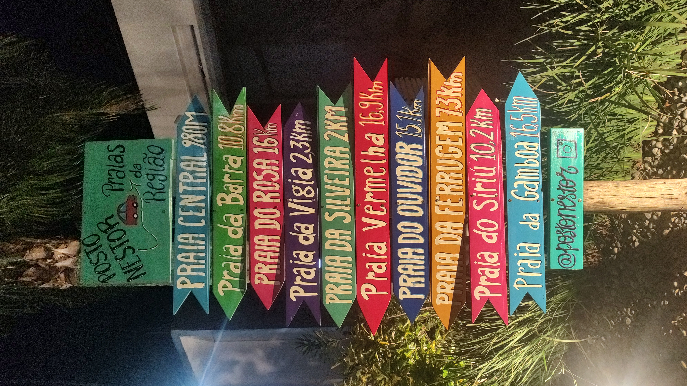

Vivimos en una era en la que la ciencia moderna avanza a pasos agigantados. Cada año, nuevos estudios nos revelan información fascinante sobre la mente, el cuerpo y la salud. Sin embargo, en muchos casos, estos “descubrimientos” no son realmente nuevos, sino redescubrimientos de conocimientos que culturas ancestrales ya aplicaban hace siglos.
El yoga y otras prácticas orientales han transmitido, durante milenios, técnicas para fortalecer el cuerpo, mejorar la respiración, aumentar la flexibilidad y alcanzar estados mentales elevados. Hoy, la neurociencia, la fisiología y la biomecánica han demostrado que estas prácticas tienen efectos reales y medibles.
En este artículo, exploraremos algunos de estos redescubrimientos científicos y cómo pueden mejorar tu vida hoy.
La respiración como puente entre el cuerpo y la mente
Los textos antiguos del yoga describen el pranayama como el arte del control de la respiración, una práctica que influye en la energía vital y la calma mental. Durante siglos, esta idea fue tomada como un concepto filosófico, pero la ciencia ha demostrado que la respiración es, en efecto, una herramienta clave para la regulación del sistema nervioso.
La investigación reciente muestra que
- técnicas como nadi shodhana (respiración alternada) reducen el estrés y mejoran la concentración al equilibrar los hemisferios cerebrales
- la respiración lenta y profunda activa el sistema parasimpático, reduciendo la frecuencia cardíaca y promoviendo la relajació
- la respiración diafragmática mejora la oxigenación pulmonar, como se verificí durante la pandemia de covid-19.
Si alguna vez has sentido que el estrés te desborda, una respiración pausada puede ser una solución efectiva y científicamente respaldada.
Bandhas y ejercicios hipopresivos: un redescubrimiento inesperado
Los bandhas son bloqueos energéticos en el yoga, utilizados para canalizar la energía del cuerpo. Uno de los más conocidos es uddiyana bandha, que consiste en contraer el abdomen y elevar el diafragma y también mula bandha, que es la contracción física del suelo pélvico, por medio del músculo pubocoxígeo.
En la actualidad, en el mundo del fitness han surgido los ejercicios hipopresivos, que utilizan exactamente el mismo mecanismo de uddiyana bandha para fortalecer el core y mejorar la función respiratoria.
Lo mismo ocurre con mula bandha, que en la actualidad ha sido redescubierto en los ejercicios de Kegel, para fortalecer los músculos del piso pélvico.
Apoyos inestables: de los guerreros antiguos al entrenamiento funcional
El entrenamiento en superficies inestables, ampliamente utilizado en fisioterapia y deportes, tiene raíces en prácticas ancestrales que buscaban mejorar el equilibrio y la propiocepción.
-
posturas de equilibrio en yoga
- vrksasana (postura del árbol) y bakasana (postura del cuervo) trabajan la estabilidad, activando músculos profundos, al igual que los ejercicios en plataformas inestables modernas
- estudios biomecánicos han demostrado que estas posturas fortalecen los estabilizadores del tobillo y la rodilla, reduciendo el riesgo de lesiones.
-
artes marciales y entrenamiento de guerreros
- en el shaolin y wushu, los monjes entrenaban sobre postes de madera, lo que desarrollaba la estabilidad articular.
- los samuráis practicaban equilibrio sobre botes, similar al entrenamiento moderno con bases inestables.
- en el kalaripayattu (india), se practicaba caminar sobre troncos y superficies irregulares, técnica que hoy se usa en rehabilitación.
-
medicina tradicional y rehabilitación
- el tai chi y el qi gong incluyen movimientos de equilibrio similares a los utilizados en terapia para prevenir caídas en personas mayores
- caminar descalzo sobre superficies irregulares (como en ayurveda) fortalece la musculatura del pie y mejora la estabilidad articular.
En otras palabras, lo que hoy se entrena con bosus y plataformas inestables, ya existía en antiguas tradiciones, con nombres diferentes y asociado a prácticas espirituales y artes marciales
Meditación y neurociencia: cuando la mente se transforma
Las antiguas tradiciones espirituales han utilizado la meditación para expandir la conciencia y reducir el sufrimiento. Hoy, la ciencia ha demostrado que la meditación no es solo un ejercicio filosófico, sino una poderosa herramienta de transformación mental.
- Los resultados de estudios en neurociencia muestran que meditar regularmente:
- reduce la actividad de la amígdala, el área del cerebro asociada al miedo y la ansiedad
- aumenta la densidad de la corteza prefrontal, mejorando la toma de decisiones y el autocontrol
- mejora la neuroplasticidad, lo que significa que el cerebro sigue aprendiendo y adaptándose incluso en la adultez
En otras palabras, la meditación cambia físicamente el cerebro y nos ayuda a responder mejor al estrés y las emociones.
Posturas que transforman la salud
Las posturas del yoga (asanas) no solo son ejercicios de flexibilidad y fuerza, sino que tienen efectos concretos en la salud física y mental. Varias de ellas han sido redescubiertas por la ciencia con aplicaciones sorprendentes.
-
Vajrasana (postura del diamante)
- se recomienda en yoga después de las comidas para mejorar la digestión
- la ciencia moderna ha demostrado que esta postura mejora la circulación en el sistema digestivo y puede prevenir el reflujo gástrico
-
Malasana (sentadilla profunda)
- en muchas culturas orientales, es una postura de descanso natural
- estudios recientes han demostrado que facilita la evacuación intestinal, lo que ha llevado a la creación de dispositivos como el squatty potty, que imita esta postura para mejorar la salud digestiva
-
Savasana (postura del cadáver)
- considerada la postura de relajación máxima en yoga
- estudios de neurociencia han demostrado que induce un estado de coherencia cerebral similar al que experimentan los meditadores avanzados, favoreciendo la relajación profunda
Un puente entre la sabiduría antigua y la ciencia moderna
Lo más fascinante de estos descubrimientos no es solo que confirman el conocimiento ancestral, sino que nos invitan a incorporar estas prácticas en nuestra vida con una nueva perspectiva. No se trata solo de tradición o de espiritualidad, sino de herramientas concretas para mejorar nuestra salud física, mental y emocional.
El yoga y la neurociencia no están en conflicto, al contrario: se complementan. En aero neuro balance, queremos construir ese puente entre la sabiduría antigua y el conocimiento científico para que tú puedas beneficiarte de ambos.
¿Te interesa aprender más sobre estos temas? Déjanos tu comentario o suscríbete para recibir nuevos artículos sobre aero neuro balance.
